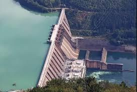

🌊 Nzilo Dam & Reservoir Lake
📍 GPS Anchor: 10.5011° S, 25.4745° E
History: Engineered in the early 1950s on the historic Lualaba River, the Nzilo hydroelectric power infrastructure was built to feed energy to the rapidly expanding industrial mining operations of Katanga. Beyond its massive engineering legacy, the reservoir has evolved into a vital environmental ecosystem and a peaceful weekend destination for boating and aquatic surveys.